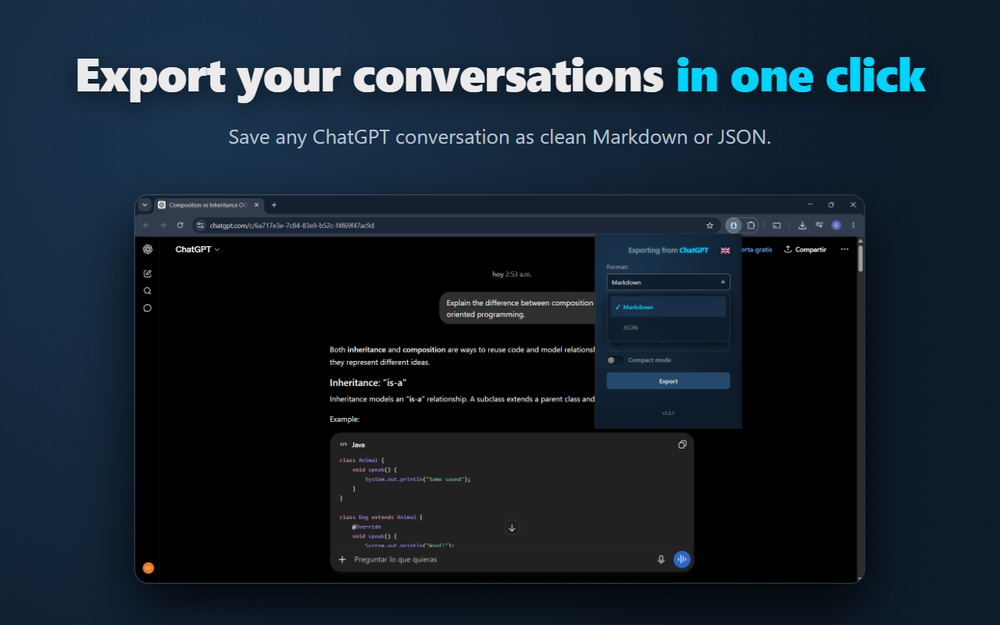
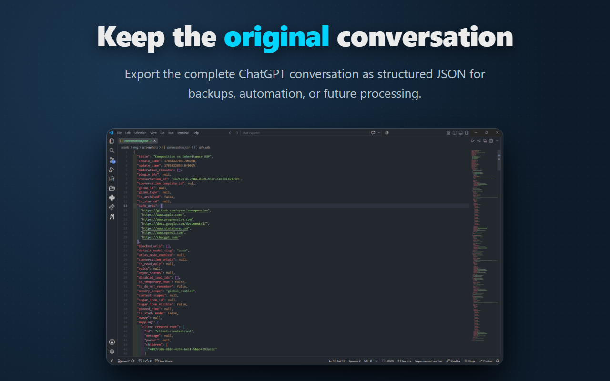
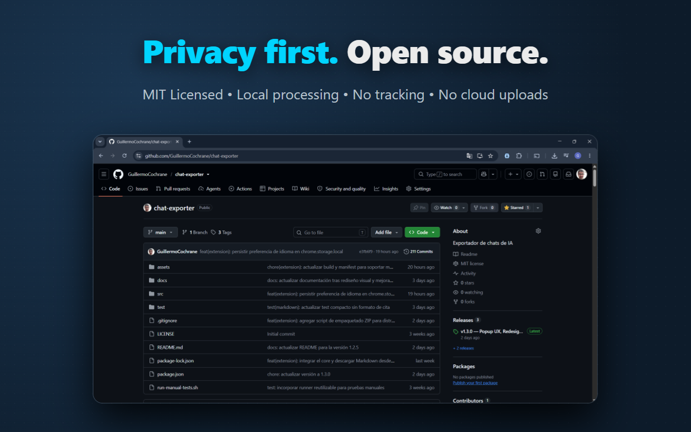

Open Source Chrome Extension
Own your conversations.
Export ChatGPT conversations as clean Markdown or JSON files directly from your browser.
See it in action
The extension keeps exports clean, readable, and portable.





Features
Everything you need to keep your AI conversations under your control.
📝 Markdown Export
Clean documents ready for Obsidian, Notion, GitHub, or long-term notes.
📦 JSON Export
Preserve the original conversation structure for automation and tooling.
👥 Role Filters
Export only User, Assistant, or the complete conversation.
🧹 Compact Mode
Reduce unnecessary spacing for smaller, cleaner Markdown files.
🔒 100% Local
All processing happens in your browser; no cloud service is involved.
🌐 Open Source
MIT licensed and fully auditable on GitHub.
Why AI Chat Exporter?
AI conversations often contain research, code, documentation, ideas, and decisions that become valuable over time.
AI Chat Exporter was created to make those conversations portable, searchable, versionable, and independent from a single platform.
Open a ChatGPT conversation, click the extension icon, choose your export options, and save the result in seconds.
Privacy First
Your conversations belong to you.
✔ 100% Local
Processed entirely inside your browser.
✔ No Tracking
No analytics, telemetry, or advertising.
✔ No Cloud
Conversations are never uploaded to external servers.
✔ Open Source
Anyone can inspect and audit the code.
No accounts. No hidden data collection. No third-party services.
Install in under a minute
- Install AI Chat Exporter from the Chrome Web Store.
- Open any ChatGPT conversation.
- Click the extension icon in your toolbar.
- Choose Markdown or JSON and export your conversation.
Roadmap
✅ Done
- Markdown export
- JSON export
- Compact mode
- Role filters
- Chrome extension
- CLI support
🚧 Next
- DeepSeek support
- Gemini support
- Claude support
🔮 Future
- Firefox extension
- HTML export
- PDF export
- Additional AI providers
Frequently Asked Questions
Does AI Chat Exporter upload my conversations?
No. Everything is processed locally in your browser.
Do I need an account?
No. The extension works with the ChatGPT session you already have open.
Where are the exported files saved?
They are downloaded directly to your device using the browser download dialog.
Can I export JSON?
Yes. JSON export preserves the original conversation structure.
Is the project open source?
Yes. The full source code is available on GitHub under the MIT License.